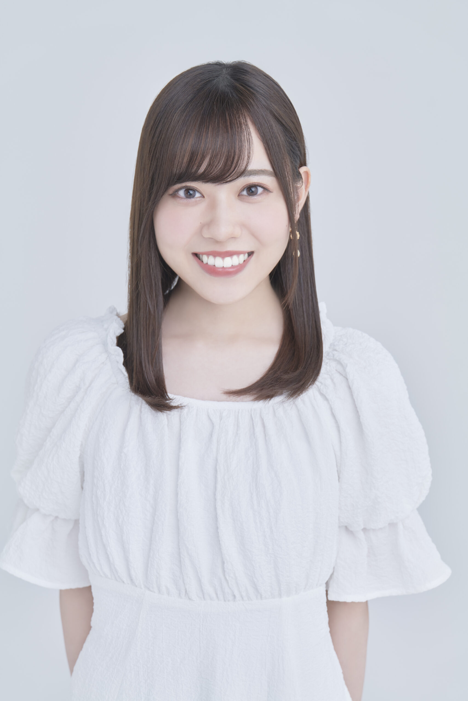

★工夫した点★
各項目のコンテンツのサイズをそれぞれ適切に統一した。
それぞれの画像をサイズ指定しないと大きすぎたり、
小さすぎたりしてバラバラだったので一つ一つ指定した。
参考にしたおみくじ、キャンバス、オリジナルは自分自身でデザイン性をアレンジして書き換えた。
好きなアニメ作品のロゴを複数用いて、それぞれの項目で個性を表現することができた点。
ボタンに動きを付けてカーソルを合わせた時とクリックした時に
利用者が感覚で触れているとわかる表現を工夫した。
★苦労した点★
授業内容のおみくじシステムの書き方で、初めは文字を画像に置き換える方法に挑戦しましたが、
難しかったので自力で調べて作り上げる過程で苦労をしました。
伊達さゆりのおみくじ画像を用意するのが大変だった。
声優事務所のApollobay会員限定ページ内にあるおみくじで一日一度しか引くことができないことから、
Webアプリ最終課題発表までに伊達さゆりの画像を4種類集めきることに苦労した。
★感想★
HTML,CSS,JavaScriptはこれまでに別の授業や資格の勉強を通して学習してきたことと、
この授業で学習した内容を活用して一つの作品を作り上げる過程で、
スキル向上など新しい知識を得ることができました。
装飾は一切自由という条件の元、自分自身の趣味を存分に活かして
作業中もモチベーションを高めながら取り組むことができた。
用いる画像やロゴを配置することによってWebページの印象がガラッと変わり、
HP作成ではデザイン性にもこだわるべきだと考えた。
今回JavaScriptやCSSで始めて用いた表現があり、最終課題が良いきっかけにできた。
★参考★
アニメタイトルロゴのジェネレーターで遊んでみた！
JavaScriptとCSSで画像をふわっと切り替えるスライドショーを作る
ApolloBay伊達さゆり
🌷伊達さゆりとは🌷

生年月日
出身地
身長
趣味
特技